About Codexa
A self-hosted EPUB reader with KOReader sync, OPDS browsing, and offline support
Codexa is a self-hosted web application for reading EPUB books. It runs as a lightweight Node.js container, requires no cloud account, and keeps all your data on your own server. Open it in any modern browser, install it as a Progressive Web App, or use the dedicated Android and iOS apps.
I was using Grimmory/Booklore as my ebook collection server and many different devices connected to its OPDS service and KOReader sync server to sync progress. Sadly some of my epub books were not properly displayed in Grimmory web reader and also two way Grimmory <-> KOReader sync was not yet working, so when failing to find alternative web base browser, I decided to develop my own. It started as a personal project, but grew so much that I would like to share if anyone else might find it useful.
Codexa stores everything locally — books, covers, annotations, and reading positions — with optional synchronisation to KOReader devices using the open KOSync protocol.
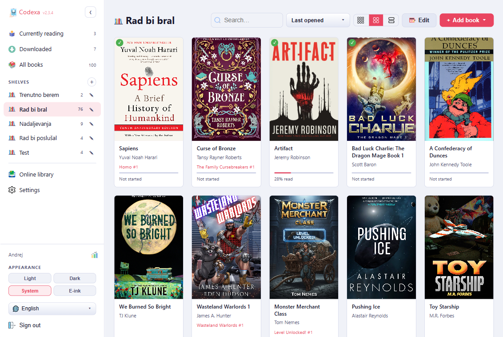
At a Glance
- Single Node.js process — easy to deploy with Docker in minutes
- Multi-user with JWT authentication — per-user libraries
- Full offline reading — via a Service Worker cache
- Built-in KOSync-compatible server — connect KOReader devices without extra software
- OPDS catalog browser — for Calibre-Web, Komga, Kavita, and others
- Works on any device — desktop browsers, mobile PWA, Android APK, iOS IPA
- Optimised for e-ink displays — BOOX, Kobo, and similar
Features
Everything included in Codexa
📖 Reading
- EPUB reader powered by epub.js — reflowable and fixed layout
- Paginated layout — with configurable margins and columns
- Bookmarks — with custom labels
- Highlights — in four colours (yellow, green, blue, pink) with notes
- In-book full-text search — with result navigation
- StarDict dictionary lookup — double-click on desktop, long-press on mobile
- Footnote and endnote popups — without leaving the page
- Bionic reading — bolds word prefixes to guide the eye
- Two-page spread — for wider screens
- Fullscreen mode
- Auto-hiding toolbar
🌟 Display & Themes
- 7 built-in themes — Light, Sepia, Dark, Sepia Dark, Midnight, Nord, plus Custom with free color picking
- E-ink mode — high-contrast black-and-white for e-ink displays
- Custom fonts (TTF/OTF/WOFF/WOFF2) uploaded by admin
- Extensive text settings — font, size, line height, letter spacing, indentation, hyphenation
- Configurable status bar — with up to 6 overlay slots
- Screen edge padding — for curved screens and notches
🔁 Sync & Progress
- Automatic position saving — on every device
- Built-in KOSync-compatible server — for KOReader devices
- External KOSync server support — with conflict resolution
- Interrupted session recovery banner
- Reading statistics — time read, pages turned, sessions, books started/finished
📱 Offline & Mobile
- Download any book for offline reading — via Service Worker cache
- PWA — installable on desktop and mobile
- Android app — with volume-key navigation, portrait lock, hardware e-ink toggle
- iOS app — sideload or TestFlight
- Responsive layout — for phones, tablets, and desktops
📚 Library
- Multi-user with JWT authentication — per-user libraries
- Shelves — organise books into named collections
- Online library — browse OPDS catalogs from Calibre-Web, Komga, Kavita, and more
- Bulk shelf sync — from OPDS folder with stale-book detection
- Series support — with series name, number, and one-click filter
- Sort — by date, title, author, progress, or series
- Real-time library search
🛡 Admin
- User management — view all accounts, delete users
- Font management — upload and delete custom fonts for all users
- Dictionary management — upload StarDict ZIP archives
- Registration control — enable or disable new-user sign-up
- Refresh book metadata — re-extract genres, descriptions, and covers from all EPUB files
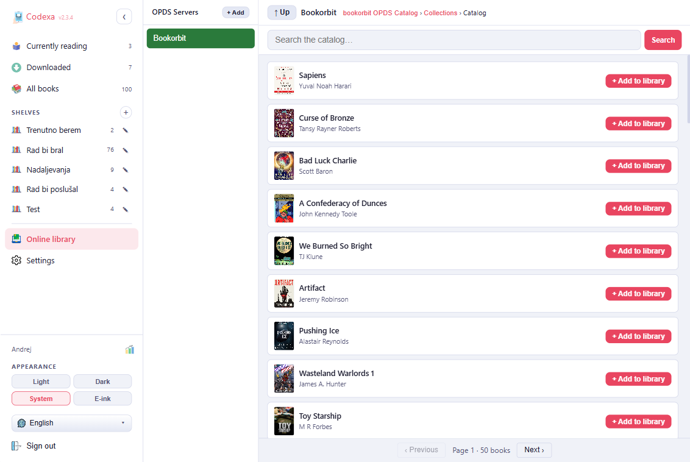
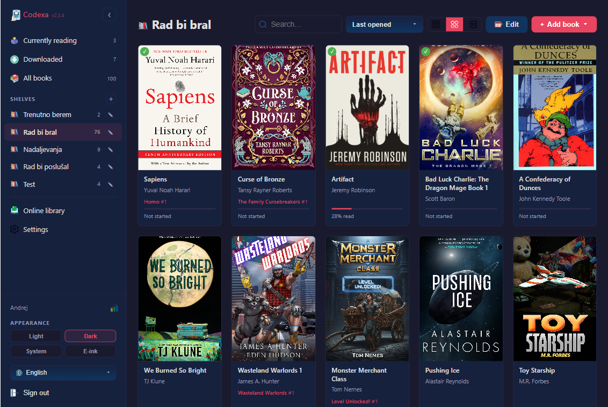
Installation
Deploy with Docker or build from source
Docker (Recommended)
The quickest way to run Codexa is with Docker Compose.
1. Create your compose file
cp docker-compose.sample.yaml docker-compose.yamlOr create docker-compose.yaml with this content:
services:
codexa:
image: ghcr.io/thehijacker/codexa:latest
container_name: codexa
restart: unless-stopped
ports:
- "3000:3000"
volumes:
- codexa_data:/data
environment:
JWT_SECRET: "replace_with_a_long_random_secret_string_at_least_64_chars"
# CORS_ORIGIN: "https://books.example.com"
# PORT: "3000"
volumes:
codexa_data:2. Generate a JWT secret
JWT_SECRET is required and must be at least 64 characters. The server will
refuse to start without it. Generate one with either command:
node -e "console.log(require('crypto').randomBytes(64).toString('hex'))"openssl rand -hex 64Paste the output into docker-compose.yaml as the value of JWT_SECRET.
JWT_SECRET will invalidate all active sessions — every user will be
logged out. Store it in a password manager or secrets vault.
3. Start the container
docker compose up -dCodexa is now running at http://localhost:3000. Register the first account — it will automatically become the admin.
Environment Variables
| Variable | Required | Default | Description |
|---|---|---|---|
JWT_SECRET |
Yes | — | Long random string (≥ 64 chars). Signs session tokens. Changing it logs everyone out. |
PORT |
No | 3000 |
TCP port the server listens on. |
DATA_DIR |
No | ./data |
Path to persistent storage (books, covers, fonts, dictionaries, database). |
CORS_ORIGIN |
No | same-origin | Allowed CORS origin, e.g. https://books.example.com. Only needed when the app is served from a different origin than the API. |
Updating
docker compose pull
docker compose up -dThe data volume is preserved across updates. The database schema is migrated automatically on startup.
Manual Build from Source
Requires Node.js ≥ 18.
git clone https://github.com/thehijacker/codexa.git
cd codexa
cp .env.example .env
# Edit .env and set JWT_SECRET
npm install
npm run build
npm start| Command | Description |
|---|---|
npm run build | Bundles and minifies the client-side assets. Run this after every pull. |
npm start | Starts the server. Reads configuration from environment variables or .env. |
npm run dev | Starts with nodemon — auto-restarts on file changes (development only). |
Behind a Reverse Proxy
Codexa serves plain HTTP. Put it behind nginx, Caddy, or
Traefik to add HTTPS. Set client_max_body_size to at least
300 MB so large EPUB uploads are not rejected.
server {
listen 443 ssl;
server_name books.example.com;
location / {
proxy_pass http://127.0.0.1:3000;
proxy_set_header Host $host;
proxy_set_header X-Real-IP $remote_addr;
client_max_body_size 300M;
}
}Mobile Apps
Install Codexa on any phone or tablet
Progressive Web App (PWA)
The easiest way to use Codexa on mobile. No app store needed — install directly from the browser.
- Android (Chrome): tap the install icon in the address bar, or open the browser menu and choose "Add to Home screen".
- iOS (Safari): tap the Share button △ → "Add to Home Screen".
- Desktop (Chrome/Edge): click the install icon in the address bar.
Once installed, Codexa opens in fullscreen without browser chrome, just like a native app.
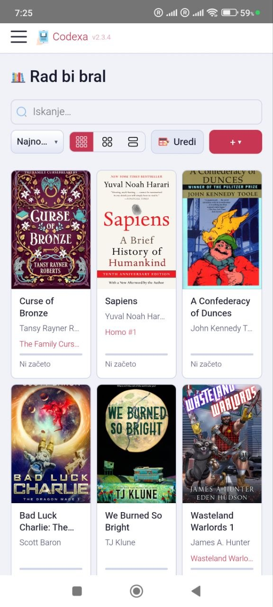
Android APK
The Android APK is a native wrapper that integrates Codexa with hardware features not available in a browser.
Installation
- Download the APK from the GitHub Releases page.
- On your Android device, go to Settings → Security (or Apps → Special app access) and enable Install from unknown sources for your browser or file manager.
- Open the downloaded APK and tap Install.
- Launch Codexa. On first run you will see a URL input screen — enter your Codexa server address (e.g.
https://books.example.com).
Changing the Server URL
From the reader, press the hardware back button twice quickly to return to the server selection screen. You can then enter a new URL.
E-ink Mode
The URL input screen has an E-ink mode toggle. When enabled, Codexa applies a grayscale colour filter system-wide, increases contrast, and disables animations. This setting is saved across restarts.
Hardware Features
- Volume keys: navigate pages with the physical volume up/down buttons (enable in reader Settings → Device).
- Portrait lock: prevent screen rotation (Settings → Device).
- Screen on: keep the display awake while reading (Settings → Device).
- Fullscreen: automatically hides Android navigation and status bars while in the reader.
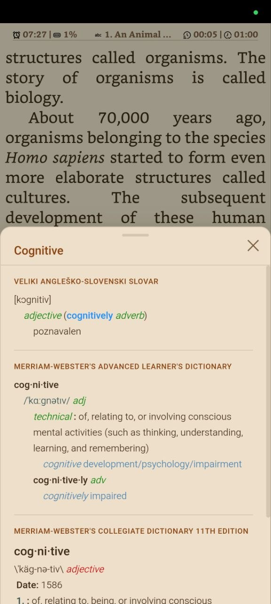
iOS App
The iOS app is built with Capacitor and wraps the Codexa web app in a native container. Distribution is available via two paths:
Path A — Free Sideload (no Apple account fee)
- Download the
.ipafile from the GitHub Actions artifacts (available 30 days after each build). - Install Sideloadly on Windows or macOS. iTunes drivers are required on Windows.
- Connect your iPhone/iPad via USB, open Sideloadly, drag in the IPA, and click Start.
- On the device: go to Settings → General → VPN & Device Management and trust the developer certificate.
Path B — TestFlight / App Store ($99/year)
With an Apple Developer Program membership you can build and distribute via TestFlight or
publish to the App Store. The repository includes a Fastlane configuration for automated
builds. See the iOS/ folder for setup instructions.
First Launch
A "Connecting…" splash screen appears briefly. Tap it to enter your Codexa server URL. The app keeps the screen on while reading and hides the iOS status bar for fullscreen content.
↑ TopData Directory
Where Codexa stores everything
All persistent data lives in a single directory — ./data by default, or the
path set by the DATA_DIR environment variable. Mount this directory as a
Docker volume to preserve data across container updates.
├── codexa.db # SQLite database (WAL mode)
├── books/
│ └── {user_id}/
│ └── {sha256}.epub
├── covers/
│ └── {sha256}.jpg
├── fonts/
│ └── {fontname}.ttf / .otf / .woff / .woff2
└── dictionaries/
├── en-sl/oxford/ # StarDict files inside
└── merriam-webster/
Details
codexa.db
SQLite database running in WAL (Write-Ahead Logging) mode. Stores users, books metadata, reading progress, annotations, bookmarks, settings, and shelf assignments. The schema is migrated automatically on startup — you never need to run manual migrations.
books/
EPUB files are stored per-user in subdirectories named by the numeric user ID. Each file is named by its SHA-256 hash, so duplicate uploads are rejected (same content = same hash). The original filename is stored in the database.
covers/
Cover images extracted from EPUB metadata during upload. Shared across all users (same book hash → same cover). Served directly by the web server with HTTP caching.
fonts/
Custom fonts uploaded by admins. Available to all users in the reader's Text settings.
Supported formats: .ttf, .otf, .woff,
.woff2.
dictionaries/
StarDict dictionary files. Each dictionary lives in its own subdirectory. The naming
convention lang-from-lang-to/dict-name/ (e.g. en-sl/oxford/)
is used to infer source and target languages, but any directory structure is valid.
Dictionaries are shared across all users.
data/ directory. The SQLite database
can be backed up live with sqlite3 codexa.db ".backup backup.db".
First Login
Register the first account and get started
When you open Codexa for the first time, you will see the login page. No default admin password exists — you must register an account.
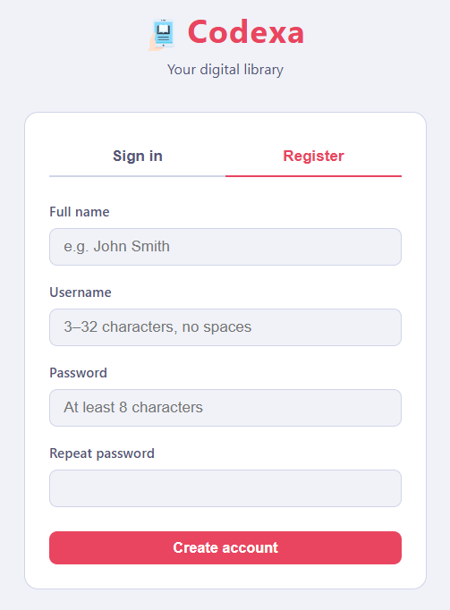
Registering
- Navigate to your Codexa server URL in a browser.
- Click Register on the login page.
- Enter a username (3–32 characters, letters, numbers, and underscores only) and a password (minimum 8 characters).
- Click Register. You will be logged in automatically.
Logging In
Enter your username and password on the login page. Sessions last 1 year. If your session expires, you will be redirected to the login page.
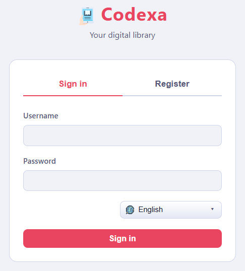
Security
- Passwords are hashed with bcrypt before storage — they are never stored in plain text.
- Login attempts are rate-limited to 10 per 15 minutes per IP address.
- Sessions use JWT tokens signed with your
JWT_SECRET.
Changing Your Password
Go to Settings → General → Change password. Enter your new password twice (minimum 8 characters) and click Save.
Disabling Registration
After creating all the accounts you need, an admin can disable new-user registration to prevent unauthorised sign-ups. See Settings → Admin.
↑ TopSettings
Configure KOReader sync, OPDS servers, dictionaries, and admin options
Open Settings by by choosing gear icon Settings option from the left menu sidebar.
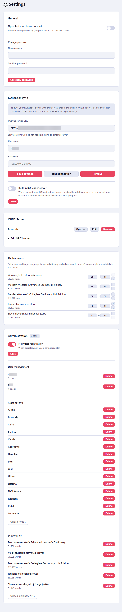
General
- Auto-open last book: when enabled, Codexa automatically opens the most recently accessed book when you visit the library. Stored in your browser's local storage.
- Change password: enter a new password (minimum 8 characters) and confirm it, then click Save.
KOReader Sync
Codexa can synchronise your reading position with KOReader devices in two ways: using its built-in sync server, or connecting to an external KOSync server.
Built-in KOSync Server
Codexa includes a KOSync-compatible server at /kosync. Enable it with the
Internal KOSync server toggle. The settings page will show you the URL to
enter in your KOReader device.
In KOReader:
- Go to Tools → KOReader Sync
- Set Custom sync server to your Codexa URL (e.g.
https://books.example.com) - Log in with the same username and password you use in Codexa
Reading positions are synced automatically when you open or close a book. The server stores a high-water mark — it only advances your position, never goes backwards.
External KOSync Server
You can also connect to a separate KOSync-compatible server (e.g. a shared community server). Enter the server URL, username, and password, then tap Test connection. If the test passes, click Save.
The Clear button removes all stored external server credentials.
OPDS Servers
Add catalog servers that appear in the Online library.
- Click Add OPDS server to expand the form.
- Enter a server name, the catalog URL, and optional username and password for protected catalogs.
- Click Add server to save.
- Each saved server has Open (go to Online library), Edit, and Delete buttons.
Dictionaries
Every user can configure their own dictionary preferences independently — changes here are personal and do not affect other users. The dictionary files themselves are global (installed by an admin and available to everyone), but the order and language labels are stored per account.
- Language labels: set From and To language codes (ISO 639-1, e.g.
en,de) for each installed dictionary. - Order: click the up/down arrows to change which dictionary's results appear first during lookup.
Changes take effect immediately in the reader.
Admin
The Admin section is visible only to the administrator. Admins are identified as the user with the lowest ID (the first account ever registered on this server).
Registration
Toggle Allow new registrations to enable or disable the registration link on the login page. Disable this after setting up all accounts to prevent unauthorised sign-ups.
User Management
Lists all registered users. Click the delete (×) button next to a user to permanently remove their account and all associated books, annotations, and settings.
Font Management
Upload custom fonts that will be available to all users in the reader's Text settings.
Supported formats: .ttf, .otf, .woff, .woff2.
Up to 50 files per upload; maximum 50 MB per file.
The reader automatically groups font files into families based on their filename. If you
name files using the convention FontName-Weight.ext, all variants appear as a
single entry in the font picker and bold/italic are applied automatically:
MyFont-Regular.ttfMyFont-Bold.ttfMyFont-Italic.ttfMyFont-BoldItalic.ttf
Recognised weight keywords: Thin, ExtraLight,
Light, Regular, SemiBold, Bold,
ExtraBold, Black. Recognised style keywords:
Italic, Oblique. Files sharing the same stem before these
keywords are grouped into one family ("MyFont" in the example above).
Dictionary Management
Upload a .zip archive containing a StarDict dictionary. The ZIP must contain
the .ifo, .idx, and .dict (or .dict.dz)
files. Up to 10 ZIPs per upload; maximum 200 MB per ZIP.
The ZIP filename (without .zip) becomes a subfolder inside
data/dictionaries/, and the archive contents are extracted into it.
For example, uploading en-sl-oxford.zip creates
data/dictionaries/en-sl-oxford/. The folder name is also used as the
dictionary's ID, so naming ZIPs with a language prefix (e.g.
en-de-langenscheidt.zip) lets Codexa infer source and target languages
automatically.
Uploaded dictionaries are immediately available to all users. Click the delete button next to a dictionary to remove it from the server.
Refresh Book Metadata
The ↺ Refresh metadata for all books button re-reads genres, description, cover image, publisher, language, ISBN, and page count directly from every EPUB file on disk and updates the database. Title and author are not overwritten so any manual edits are preserved.
Use this after updating books on an OPDS server and re-downloading them, or if books were added to the library before a newer version of Codexa that extracts additional fields (such as genre tags). The same action is also available in the library's Edit mode (select the "All Books" tab, enable Edit, then click ↺ Refresh metadata in the toolbar).
↑ TopDictionary Lookup
Look up words instantly using StarDict dictionaries
How It Works
Dictionary lookup can be triggered in different ways depending on your device:
- Desktop browser — double-click: double-clicking a word opens the dictionary immediately without any extra steps.
- Desktop browser — drag selection: drag the cursor over a word or phrase to select it. A bottom toolbar appears; click the dictionary icon to look up the selection.
- Mobile / touch: long-press a word to open the bottom toolbar, then tap the dictionary icon.
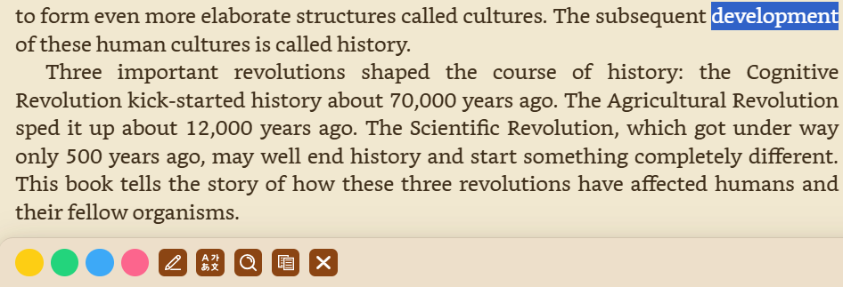
A bottom sheet slides up showing all definitions found across your enabled dictionaries. If multiple dictionaries are enabled, each result is labelled with its dictionary name. If no exact match is found, Codexa shows words with similar spelling as suggestions.
Installing Dictionaries
Codexa uses the StarDict format. A dictionary consists of at least three files:
.ifo— dictionary metadata (name, word count).idx— word index.dictor.dict.dz— compressed definitions
Option 1 — Upload a ZIP (admin)
- Create a ZIP archive containing the StarDict files for one dictionary.
- Go to Settings → Admin → Dictionaries.
- Click Upload dictionary ZIP and select your file.
- The dictionary is extracted and becomes immediately available to all users.
Option 2 — Place files directly
Copy StarDict files into the data/dictionaries/ folder on the server.
Arrange them in subdirectories — one subdirectory per dictionary. The naming convention
lang-from-lang-to/dict-name/ (e.g. en-sl/oxford/) is
optional but allows Codexa to infer the dictionary's language.
No server restart is required — dictionaries are discovered at lookup time.
Enabling and Reordering
- In the reader sidebar → Dictionaries tab: toggle checkboxes to enable/disable dictionaries for the current session. Use the up/down arrows to change priority.
- In Settings → Dictionaries: set language labels (From/To) and change the default order. Preferences are saved to your account.
Dictionaries higher in the list appear first in the lookup popup.
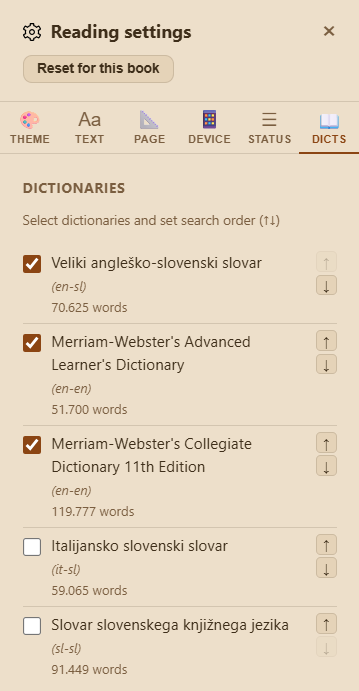
Online Library
Browse and import books from any OPDS-compatible catalog
Getting Started
OPDS (Open Publication Distribution System) is a standard catalog format supported by Calibre-Web, BookOrbit, Booklore, Komga, Kavita, Ubooquity, Bookwyrm, and many other self-hosted book servers. There are also a number of public OPDS catalogs available online. To browse an OPDS catalog, you must first add it as a server in Codexa.
- Go to Settings → OPDS Servers and add at least one server (name, URL, and optional credentials).
- Open the Online library from the sidebar.
- Select a server from the left pane to browse its catalog.
Browsing
- Navigate folders by clicking on them — a breadcrumb trail shows your location.
- Book covers and titles are shown in a grid. Click a book to see its details and download options.
- If the server supports OpenSearch, a search box appears at the top of the catalog pane.
- Paginated feeds are loaded automatically as you scroll.
Downloading a Single Book
Click any book in the catalog → click Add to library. The EPUB is saved to your Codexa library immediately. Metadata (title, author, cover, series) is extracted automatically.
Folder Sync to Shelf
Navigate to any folder in the OPDS catalog and click Sync to Shelf button on top right side of the folder icon. This bulk-imports the entire folder into a Codexa shelf, keeping it in sync with the source catalog.
- A pre-flight count is shown before you confirm — so you know how many books will be downloaded.
- Progress is streamed in real time. Books already in your library are skipped (no duplicate downloads).
- Books that were previously synced but are no longer in the catalog are flagged as stale.
- Re-running a sync on the same shelf adds new books and reports removals without deleting anything automatically.
- Tick Force redownload all books before confirming to re-download every book in the folder regardless of whether it already exists in the library. Each file is replaced on disk, its MD5 is recomputed, and all metadata fields (genres, description, cover, language, etc.) are refreshed from the new file. Title and author are not overwritten. Use this after updating book files or metadata on the OPDS server.
Themes
Light, dark, sepia, and e-ink display modes
Reader Themes
Codexa includes seven reading themes. Select one in Reader → Settings → Theme.
| Theme | Description |
|---|---|
| Light | White background, dark text — classic day reading. |
| Sepia | Warm cream background, dark text — easy on the eyes in bright rooms. |
| Dark | Dark grey background, light text — comfortable in dim light. |
| Sepia Dark | Warm dark background, light text — combines warmth with low brightness. |
| Midnight | Pure black background, light text — maximum battery saving on OLED. |
| Nord | Cool blue-grey palette inspired by the Nord colour scheme. |
| Custom | Pick your own background and text colour using colour pickers that appear when this theme is selected. |
Override Book Styles
Enable Override book styles in the Theme tab to force the reader's fonts and colours on books that define their own CSS. Useful for books with hard-coded dark text that doesn't adapt to dark themes.
E-ink Mode
E-ink mode switches the entire interface to high-contrast black and white, disables colour transitions and shadows, and reduces animations. It is designed for e-ink display devices such as BOOX readers.
Enabling E-ink Mode
- In the reader: Settings → Theme tab → enable E-ink mode.
- Android app: toggle on the server URL input screen. The setting is persisted across restarts — no need to re-enable after closing the app.
- From the library: tap the theme icon in the library header and select E-ink. This switches the library to black and white and also forces the reader into e-ink mode whenever a book is opened.
App Theme (Library)
The library interface follows the system's light/dark preference automatically. A theme selector in the library header lets you lock it to Light, Dark, or E-ink independently of the system setting. When E-ink mode is selected here, the reader automatically opens in e-ink mode as well — no need to configure it separately inside the reader.
↑ TopSupported Languages
The Codexa interface is available in 7 languages
| Language | Code | Status |
|---|---|---|
| English | en | Default |
| German | de | Available |
| French | fr | Available |
| Italian | it | Available |
| Spanish | es | Available |
| Portuguese | pt | Available |
| Slovenian | sl | Available |
How Language is Selected
Codexa detects the preferred language from your browser's Accept-Language
header and loads the appropriate locale file automatically. If your browser language is
not supported, English is used as the fallback.
Hyphenation Languages
The reader supports automatic word hyphenation for the following languages (configured in Settings → Text → Word hyphenation):
Slovenian, English, German, French, Italian, Spanish, Portuguese, Dutch, Polish, Czech, Croatian, Slovak, Russian, Ukrainian
Hyphenation dictionaries are selected per-book. If a book's language metadata matches one of the supported languages, it is pre-selected automatically.
↑ TopUploading Books
Add EPUB files to your library
Accepted Format
Codexa supports EPUB files only (.epub). Maximum file size
is 300 MB per upload.
Upload Methods
File Picker
- Open the library.
- Click the Upload button (⇧ icon) in the toolbar.
- Select one or more
.epubfiles from your device. - The files are uploaded, metadata is extracted, and covers are generated automatically.
Drag and Drop
Drag one or more .epub files from your file manager and drop them anywhere
on the library page. A drop overlay appears to confirm the action.
From Online Library
Navigate to a book in the Online Library and click Add to library. The book is saved directly to your library.
OPDS Folder Sync
Use Sync to Shelf in the OPDS browser to bulk-import an entire catalog folder. See Online library for details.
Duplicate Detection
Codexa computes a SHA-256 hash of each uploaded EPUB. If the same file content already exists in your library, the upload is rejected with a friendly message — no duplicates are stored.
Metadata Extraction
The following metadata is extracted automatically from the EPUB:
- Title, author
- Cover image
- Series name and number
- Description, publisher, language, ISBN
- Genre tags, page count
If a book is missing genres or other fields (for example because it was uploaded before a newer version of Codexa), use Settings → Admin → ↺ Refresh metadata for all books to re-extract everything from the EPUB files on disk.
↑ TopLibrary
Browse, search, and organise your book collection
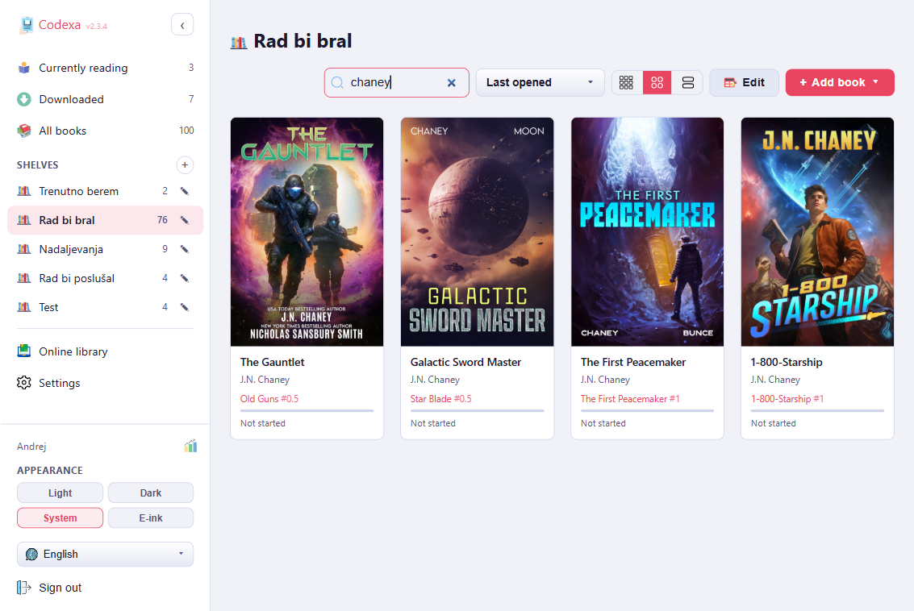
Browsing
Books are shown as a grid of covers. Below each cover the title, author, series (if any), and a reading progress bar are displayed.
Desktop (mouse): hover over a cover to reveal the action buttons. Click
the cover or any empty area on the card to open the reader directly.
Touch: a single tap reveals the action buttons. A second tap on the card
opens the reader.
The action buttons that appear on each card are:
- 👁 Cover preview — shows the full-size cover image in a popup (only shown when the book has a cover).
- ℹ Info — opens the book details dialog with metadata, shelves, KOSync status, and quick actions.
- Download / Delete offline — caches the EPUB locally for offline reading, or removes it from the local cache if already downloaded. A ✓ badge on the cover indicates a book is cached.
- Read — opens the book in the reader immediately, resuming from the last position.
A Peek button is also permanently visible in the bottom-right corner of every cover (shown on hover on desktop, always visible on touch). Peek opens the book without saving your reading position — useful for a quick preview.
A ⋮ quick menu is available at the bottom-right corner of every book card. Click or tap it to open a compact popup with the same four actions — Read, Peek, Info, and Download/Remove offline — without needing to hover over the cover first. This is particularly useful on touch devices where the hover actions are not always easy to reach.
Search
The search bar at the top of the library filters books in real time by title and author. Results update as you type — no need to press Enter.
Sort Order
Click the sort menu (☰) in the library toolbar to change the sort order:
- Recently Added — newest uploads first (default)
- Last Opened — most recently read books first
- Title — alphabetical by book title
- Author — alphabetical by author name
- Progress — sort by reading percentage
- Series — group by series name and number
Density Toggle
Click the density button (▦) to cycle through three cover sizes: compact (more books per row), normal, and large. Your preference is saved.
Library Shelf Tabs
The sidebar shows three built-in views at the top of the Shelves section:
- All Books — every book in your library.
- Currently Reading — books you have opened at least once, not yet at 100%.
- Downloaded — books cached for offline reading.
Edit Mode
Click the Edit button to enter edit mode. In edit mode you can:
- Select multiple books by tapping their covers.
- Assign selected books to one or more shelves.
- Delete selected books (with confirmation).
Click Done to exit edit mode.
Reading Statistics
Codexa tracks your reading activity per book and in aggregate. Statistics include time read, pages turned, reading sessions, books started, and books finished. Access per-book statistics from the Book Details dialog → Reading tab.
↑ TopShelves
Organise your books into named collections
Shelves are custom collections that appear in the left sidebar. Use them to group books by genre, reading list, project, or any organisation that suits you.
Creating a Shelf
- In the sidebar, find the Shelves heading.
- Click the + icon next to it.
- Enter a name for the shelf and press Enter or click Save.
Adding Books to a Shelf
- From edit mode: click Edit in the library toolbar, select the books you want to add, then click Add to Shelf and choose the target shelf.
- From book details: open the Book Details dialog → Shelves tab → toggle the shelf checkboxes.
Editing and Deleting Shelves
Hover over a shelf name in the sidebar to reveal the edit (✎) and delete (×) buttons. Deleting a shelf removes the shelf but does not delete the books in it.
OPDS Folder Sync
Any shelf can be linked to an OPDS catalog folder. When you run Sync to Shelf from the OPDS browser, the selected folder's books are downloaded and added to a shelf with that name. Re-running the sync:
- Downloads new books that appeared in the catalog since the last sync.
- Skips books already in your library (duplicate detection by file hash).
- Reports books that were removed from the catalog (stale books) — you decide whether to keep or remove them.
Offline Reading
Read your books without an internet connection

How It Works
Codexa uses a Service Worker to cache files in your browser. There are two separate caches:
- App shell cache — the HTML, CSS, JavaScript, and fonts that make up the Codexa interface. This is cached automatically on your first visit, so the app loads without a network connection even if you haven't downloaded any books.
- Book cache — EPUB files that you explicitly download for offline use. Each book is stored individually and can be removed without affecting other cached books.
Downloading a Book for Offline Use
- Tap a book cover in the library to open its details.
- Click Download for offline reading.
- Progress is shown in the dialog. When complete, the book is available offline.
Reading Offline
When your device has no network connection, the library automatically switches to showing only downloaded books. All reader features work normally offline:
- Bookmarks and annotations are stored in IndexedDB (on-device database).
- Reading progress is saved locally and synced to the server when you come back online.
- Dictionary lookups work for dictionaries that are served from your server (offline only if the server is reachable or cached).
What Happens When You Come Back Online
- Reading progress is automatically pushed to the KOSync server.
- OPDS catalog data refreshes.
- New books uploaded to the server appear in the library.
Removing a Downloaded Book
Open the book's details dialog and click Remove from device. The EPUB is removed from the local cache but remains in your server library.
You can also view all downloaded books in the Downloaded shelf in the library sidebar.
↑ TopBook Details
View metadata, manage shelves, and access sync options
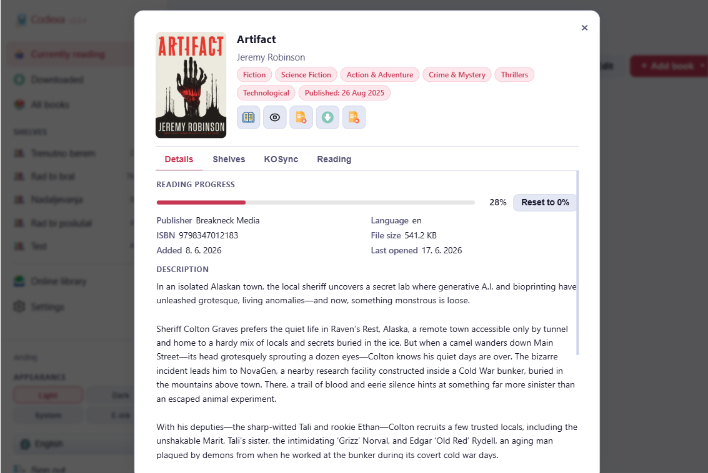
Open the book details dialog by tapping the ℹ Info button on a book card. It has four tabs and five quick-action buttons at the top.
Quick Actions
| Button | Action |
|---|---|
| Read | Open the book in the reader, restoring your last position. |
| Peek | Open in read-only mode — your reading position is not saved. Useful for previewing a book without advancing your progress. |
| Download | Download the EPUB file to your device (Save As dialog). |
| Offline | Cache the book for offline reading (or remove from cache). |
| Delete | Permanently delete the book from your library (with confirmation). |
Details Tab
Shows the book's full metadata:
- Cover image
- Title, author
- Series name and number
- Tags / genres
- Publisher, publication language, ISBN
- File size, date added to library
- Current reading progress (percentage and last position)
- Description (from EPUB metadata)
Shelves Tab
A list of all your shelves with checkboxes. Toggle a shelf to add or remove this book from it. Changes are saved immediately.
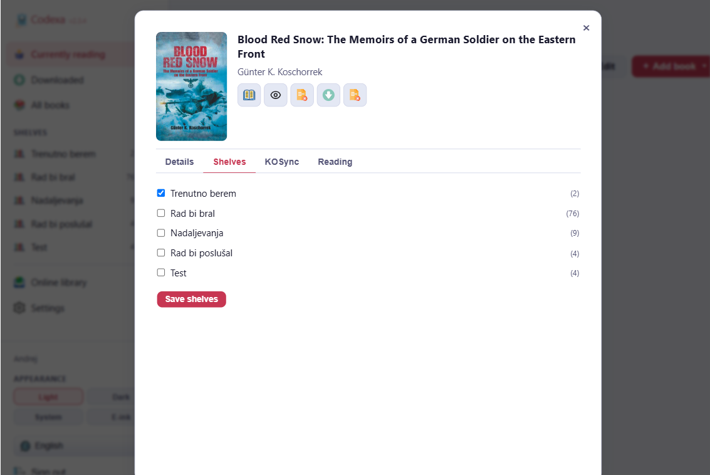
KOSync Tab
Shows the reading progress last received from your KOReader device:
- Current position (CFI) and percentage
- Device name and sync timestamp
KOSync hash override: KOReader identifies books by an MD5 hash of the file. If your Codexa EPUB and KOReader's copy are slightly different (e.g. different editions), the hashes won't match. Enter the MD5 hash from KOReader here to link them manually.
Re-download from OPDS: if this book was originally imported from an OPDS source, you can force-download the latest version from that source URL.
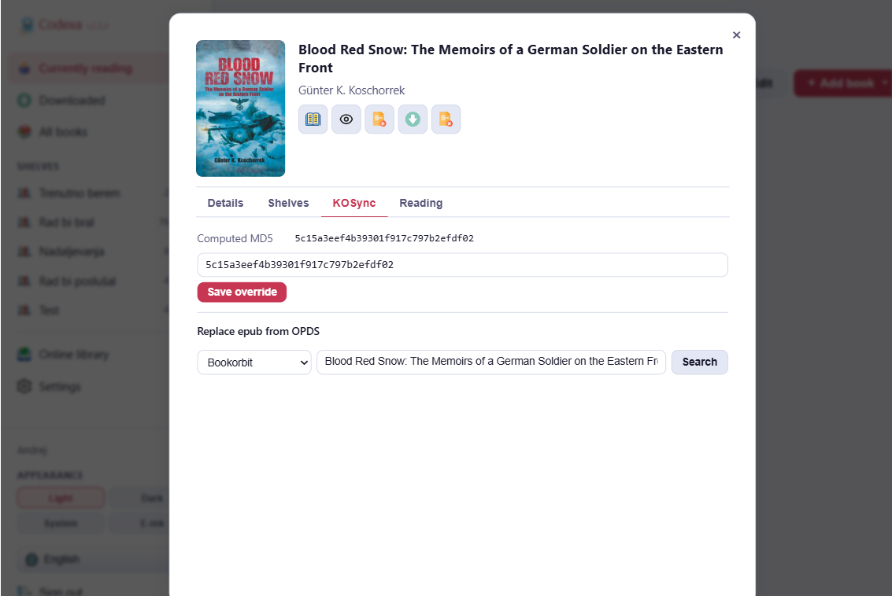
Reading Tab
- Last read position and percentage
- Total reading time and number of sessions
- Annotation (highlight + note) count
- Bookmark count
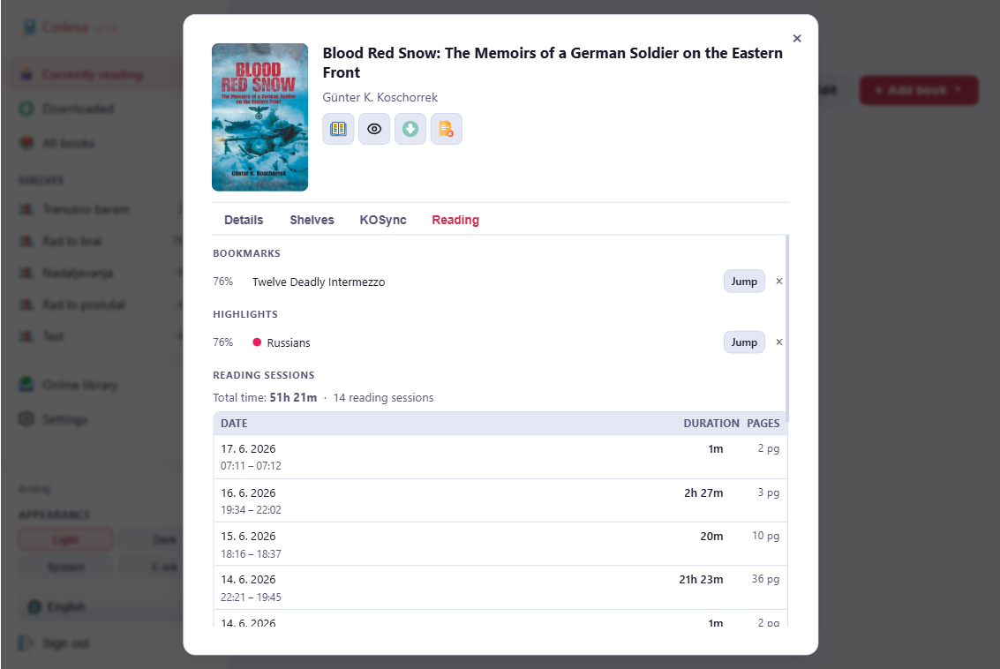
Reader
Everything available inside the Codexa EPUB reader


Interface Overview
The reader has three main areas:
- Header bar — buttons for TOC, bookmarks, highlights, search, jump, settings, fullscreen, and back to library. Can be set to auto-hide while reading.
- Reading area — the book content rendered by epub.js. The left and right edges are tap/click zones for page navigation.
- Status bar — configurable overlay slots at the top and bottom of the screen showing page numbers, progress, time estimates, and more.
Navigation
Tap / Click
- Right half of the screen → next page
- Left half of the screen → previous page
The centre of the screen is reserved for text selection and dictionary lookups.
Swipe (touch)
- Swipe left → next page
- Swipe right → previous page
Keyboard
| Key | Action |
|---|---|
| → / Space / Page Down | Next page |
| ← / Page Up | Previous page |
| K | Toggle Table of Contents |
| I | Toggle Search |
| S | Toggle Settings |
| F | Toggle fullscreen |
| Esc | Close open panel — or return to library |
Mouse Wheel
Enable mouse-wheel page turning in Settings → Device → Mouse wheel navigation.
Volume Keys (Android App)
Enable in Settings → Device → Volume key navigation. Swap the direction with Swap volume key direction.
Table of Contents

Press K or tap the TOC button (☰) in the header. The current chapter is highlighted. Tap any chapter to jump to it — the sidebar closes automatically.
Bookmarks

- Tap the Bookmarks button (🔖) — the badge shows the count.
- Click + to save your current position. The bookmark is labelled with the chapter title by default.
- Tap any bookmark to jump to it; a Back / Accept button pair appears so you can return or confirm.
- Rename a bookmark with the pencil icon; delete with ×.
- Bookmarks are stored per user and available on all devices.
Highlights & Annotations


Creating a Highlight
- Select text by pressing and holding (mobile) or clicking and dragging (desktop).
- The annotation toolbar appears above or below the selection.
- Tap a colour button (yellow, green, blue, pink) to save the highlight.
Adding a Note
After selecting text, tap the pencil (✎) button in the toolbar. Type your note (up to 1 000 characters) and click Save.
Viewing All Annotations
Tap the Highlights button in the header to open the annotations sidebar. All highlights are listed in reading order with colour indicator, highlighted text, and any attached note. Tap an entry to jump to its position.
Editing or Deleting a Highlight
Tap an existing highlight in the text. An edit sheet slides up from the bottom showing the highlighted text, a colour picker, an edit note button, and a delete button.
Dictionary Lookup from Selection
After selecting text, tap the magnifying glass (🔍) button in the toolbar to look up the selection without saving a highlight.
In-Book Search

Press I or tap the search button. Type a word or phrase and press Enter. Results are grouped by chapter with surrounding context. Tap any result to jump to it. A Back / Accept button pair lets you return to your original position or confirm the jump.
Dictionary Lookup

Desktop: double-click a word to open the dictionary directly. To look up
a selection, drag to select it and tap the dictionary icon in the bottom toolbar.
Mobile: long-press a word to open the bottom toolbar, then tap the
dictionary icon. A bottom sheet shows definitions from all enabled dictionaries.
Footnotes

Tap any footnote or endnote marker. The note content appears in a popup at the bottom of the screen — you don't need to leave your reading position. Tap × or outside the popup to dismiss.
Reading Progress & Session Recovery
Your reading position is saved automatically as you read. If you close the browser or app mid-chapter, a resume banner appears the next time you open the library. Tap Resume to jump back, or Dismiss to ignore it.
Jump to Position

Tap the percentage button (%) in the header. Drag the slider to any position. Chapter markers on the slider show chapter boundaries. Use the Previous / Next chapter buttons to jump to adjacent chapters.
Fullscreen Mode
Press F or tap the fullscreen button (▢) to hide all browser chrome. Press F again or Esc to exit. A small exit button also appears in the corner.
Reading Settings

Press S or tap the settings button (⚙). Settings are saved globally and apply to all books. Use Reset for this book at the top of the panel to clear any per-book overrides.
Theme Tab

- Theme: Light, Sepia, Dark, Sepia Dark, Midnight, Nord, Custom. Selecting Custom reveals a background colour picker and a text colour picker.
- Override book styles: forces the reader's fonts and colours on books with their own CSS.
- E-ink mode: high-contrast black-and-white for e-ink displays.
- Page gap shadow: thin shadow along the book spine in two-page spread mode.
Text Tab
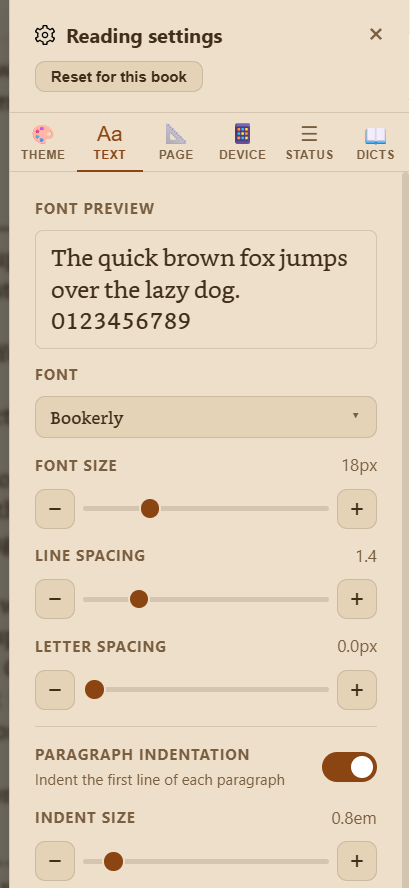
- Font: system fonts + any custom fonts uploaded by an admin.
- Font size: 12–36 px.
- Line spacing: 1.0–3.0.
- Letter spacing: 0–10 px.
- Paragraph indentation: toggle + depth slider (0.5–4 em).
- Paragraph spacing: 0–3 em extra space between paragraphs.
- Chapter heading spacing: compresses whitespace before headings.
- Hide empty lines: collapses blank paragraphs.
- Left-align text: disables CSS justification.
- Word hyphenation: automatic hyphenation at line breaks; language-aware.
- Bionic reading: bolds the first ~40% of each word to guide the eye.
Page Tab

- Page layout: Single page or Two pages (spread — side-by-side like an open book).
- Margins: horizontal margin between text and screen edge (0–120 px).
- Auto-hide toolbar: hides the header while reading; reveal by moving the pointer to the top or tapping the top edge.
- Screen edge padding: insets for each side to avoid curved edges and notches.
Device Tab

- Keep screen on: prevents sleep using the browser WakeLock API (requires HTTPS).
- Mouse wheel navigation: scroll wheel turns pages.
- Portrait lock: locks orientation to portrait.
- Volume key navigation (Android app only): hardware volume buttons turn pages.
- Swap volume key direction (Android app only): reverses which button goes forward.
- Skip progress check on open: opens the book from the beginning instead of the last position.
- Skip auto-save on close: prevents position from being saved when leaving the reader.
Status Bar Tab

Place information overlays in up to six positions around the reading area: top-left, top-centre, top-right, bottom-left, bottom-centre, bottom-right.
[ top-left ] [ top-centre ] [ top-right ]
───────────────────────────────────────────── ← separator (optional)
[ book text ]
───────────────────────────────────────────── ← separator (optional)
[ bot-left ] [ bot-centre ] [ bot-right ]Available information items:
| Item | Description |
|---|---|
| Chapter page (X/Y) | Current page and total pages in the current chapter |
| Book page (X/Y) | Absolute page number across the whole book |
| Pages left in chapter | Remaining pages until the end of the chapter |
| Pages left in book | Remaining pages in the entire book |
| Chapter progress % | Percentage through the current chapter |
| Book progress % | Percentage through the entire book |
| Time to end of chapter | Estimated time to finish the chapter (from your reading speed) |
| Time to end of book | Estimated time to finish the book |
| Current time | System clock |
| Book title | Title of the current book |
| Book author | Author of the current book |
| Chapter title | Title of the current chapter |
Additional options: Book progress bar and Chapter progress bar (thin lines at top or bottom), separator lines above/below the status area.

Dictionaries Tab
Lists all installed dictionaries with their word count. Toggle each on/off, and use the up/down arrows to change lookup priority. Admins see an additional Upload button.
KOReader Sync
Two tap areas in the bottom corners of the reading screen trigger a manual sync:
- Bottom-left corner — pull the latest position from the sync server.
- Bottom-right corner — push your current position to the sync server.
If the server position differs from your local position (e.g. you read on another device), a conflict resolution dialog asks which position to use: Stay here or Jump to X%.
Peek Mode
Open a book in Peek mode (from the Book Details dialog) to read without saving your position. Useful for reviewing a book without advancing your progress tracker.
↑ Top